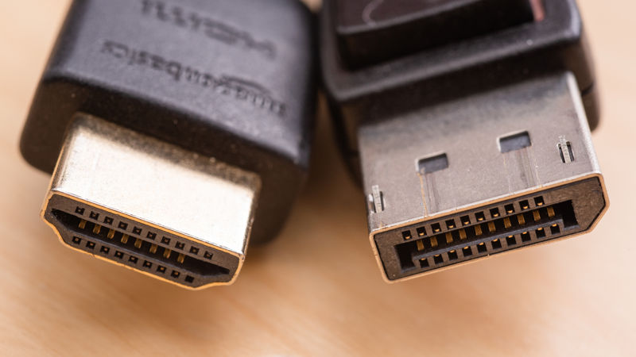
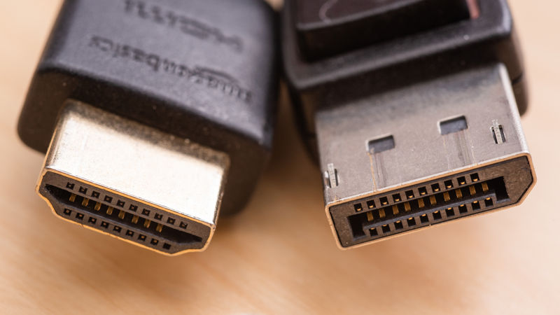

Display Port
|

differenza fra cavo Display Port e HDMI |

cavo Display Port |
|

differenza fra cavo Display Port e HDMI |
cavo Display Port |
La dispaly Port è uno standard di interfaccia video digitale usato per collegare una sorgente video a un dispositivo di visualizzazione (monitor)
funzione?
La Display Port è stata creata per sostituire gli standard VGA e DVI, quest'interfaccia è infatti compatibile con le ultime due citate tramite adattatori
[1] trasmissione dati a pacchetti
[2] supporta la profindità di colore
[3] massima caapcità di banda = cavo da 2m
[4] minima capacità di banda = cavo da 15m
[5] esistono diverse versioni:
- 1, 1.1a --> supporta cavi in fibra ottica anzichè in rame
- 1.2, 1.2a --> raddoppia la banda dati
-1.3 --> aumenta l'ampiezza di banda (14.4 Gbit/s)
-2.0 --> aumenta l'ampiezza di banda (77.4 Gbit/s) + risoluzione 16K
| PIN 1 | segnale "vero" (lane 0) |
| PIN 2 | massa |
| PIN 3 | segnale "complementare" |
| PIN 4 | segnale "vero" (lane 1) |
| PIN 5 | massa |
| PIN 6 | segnale "complementare" |
| PIN 7 | segnale "vero" (lane 2) |
| PIN 8 | massa |
| PIN 9 | segnale "complementare" |
| PIN 10 | segnale "vero" (lane 3) |
| PIN 11 | massa |
| PIN 12 | segnale "complementare" |
| PIN 13 | massa |
| PIN 14 | massa |
| PIN 15 | segnale "vero" canale ausiliario |
| PIN 16 | massa |
| PIN 17 | segnale "complementare" canale ausiliario |
| PIN 18 | rilevamento hot plug |
| PIN 19 | massa alimentazione |
| PIN 20 | alimentazione |
La Diaplay Port oltre ai segnali video è in grado di trasportare anche dati (USB) e segnali audio
quando viene creata e da chi?
Viene creata nel 2006 dalla VESA (Video Elettronic Standards Association) ed entra in commercio nel 2008